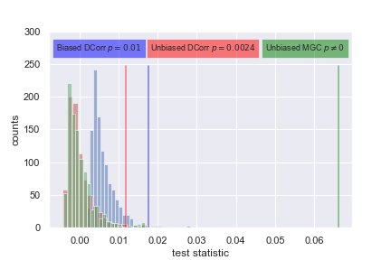
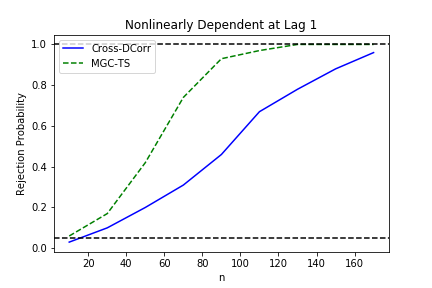

<!-- class: middle --> name:opening #### Randomer Forest Joshua T. Vogelstein | <https://neurodata.io/rerf> <img src="images/neurodata_purple.png" style="height:350px; float:right;"/> <br><br><br><br><br><br><br><br><br> <!-- <img src="images/funding/jhu_bme_blue.png" STYLE="HEIGHT:95px;"/> <img src="images/funding/KNDI.png" STYLE="HEIGHT:95px;"/> --> .footnote[[jovo@jhu.edu](mailto:jovo@jhu.edu) | <http://neurodata.io/talks/> | [@neuro_data](https://twitter.com/neuro_data)] <br> --- #### Motivation <br> -- - Discover predictable patterns in high-dimensional data - predict disease status vs wild-type - predict age - find "similar" individuals --- #### Formal Definition of Supervised Machine Learning <br><br> <!-- <img src="images/setup.png" alt="Drawing" style="width: 60%;"/> --> - Let $x_i \in \mathcal{X} \subseteq \mathbb{R}^p$ - Let $y_i \in \mathcal{Y} \subseteq \mathbb{R}^q$ - Given $\mathcal{D}_n = (x_i, y_i)$ pairs, for $i \in 1,\ldots, n$ - Assume each pair is sampled independently and identically from some joint distribution, $F_{XY}$ - Use the data $\mathcal{D}\_n$ to obtain an estimate of a function of $F\_{Y|X}$ --- ### Examples - Example 1 (classification): $y \in \{0,1\}$, we desire to estimate $E[Y|X]$ -- - Example 2 (regression): $y \in \mathbb{R}$, we desire to estimate $E[Y|X]$ -- - Example 3 (multivariate regression): $y \in \mathbb{R}^p$, we desire to estimate $E[Y|X]$ -- - Example 4 (canonical correlation analysis): we desire to find low-dimensional representations of $X$ and $Y$ that preserve certain properties -- - Example 5 (quantile regression): $y \in \mathbb{R}$, we desire to estimate $P[Y < y | X]$ -- - Example 6 (mutual information): we desire to estimate the amount of information $X$ and $Y$ have about one another, $MI(X,Y)= \sum_x P[x] \sum_y P[y|x] \log P[y|x]$ -- - Example 7 (independence testing): we wonder is $X$ independent of $Y$, $H\_0: F\_{XY} = F\_X F\_Y$, $H\_A: F\_{XY} \neq F\_X F\_Y$ -- .r[!!!!] --- class: top, left ## Outline <br> - intuition - simulations - real data - extensions - theory - discussion --- class: middle # .center[intuition] --- class: top, left #### Intuitive Desiderata of Supervised Learning Procedures <!-- <br> --> 1. Performant under *any* joint distribution - low- and high-dimensional - Euclidean and structured data (eg, sequences, images, networks, shapes) - linear and nonlinear relationships 6. Is interpretable 5. Is computational efficiency --- ### linear 2-way classification in 1 dimension <img src="images/1D-classifier.png" style="width: 50%;"/> - build a classifier on $\mathcal{D}_n$ - try all possible splits, compute the "score" for each - split on the best choice (highest score) - predict the class of a new $x$ - $g(x) = 1$ if $ x>$ threshold - $g(x) = 0$ if $x < $ threshold <br> -- - limitations? --- ### decision tree in 1 dimension <img src="images/1D-classifier.png" style="width: 50%;"/> - build a tree on $\mathcal{D}_n$ - try all possible splits, compute the "score" for each - split on the best choice (highest score) to create two daughter nodes - repeat on the daughter nodes - predict the class of a new $x$ - push down the tree - select the plurality class for the node $x$ lands in -- - limitations? --- ### random forest in 1 dimension <img src="images/1D-classifier.png" style="width: 50%;"/> - build a forest on $\mathcal{D}_n$ - subsample the data to select $m < n$ points - build a tree on each - predict the class of a new $x$ - push down each tree - select the plurality vote of the trees -- - limitations? --- ### random forest in 1D - what score function should i use? purity - how deep should each tree be? as deep as possible - how many trees? about 1000 seems fine - how does it scale? linearly in $n$, number of trees, dimension of data - any problems in 1D? not really --- ### linear 2-way classification in 2 dimension <img src="images/2D-classifier.png" style="width: 50%;"/> - build a classifier on $\mathcal{D}_n$ - try all possible .r[angles (?)], compute the "score" for each - split on the best choice (highest score) - predict the class of a new $x$ - $g(x) = 1$ if $ x>$ the line - $g(x) = 0$ if $x < $ the line <br> -- - limitations? --- ### decision tree in 2 dimension .pull-left30[ <img src="images/2D-decision-tree.png" style="height: 550px;"/> ] .pull-right70[ - build a tree on $\mathcal{D}_n$ - .r[for each dimension] try all possible splits, compute the "score" for each - split on the best choice (highest score) to create two daughter nodes - repeat on the daughter nodes - predict the class of a new $x$ - push down the tree - select the plurality class for the node $x$ lands in ] -- .pull-right70[ - limitations? ] --- ### random forest in 2 dimension .pull-left30[ <img src="images/2D-random-forest.png" style="height: 550px;"/> ] .pull-right70[ - build a forest on $\mathcal{D}_n$ - subsample the data to select $m < n$ points - build a tree on each - predict the class of a new $x$ - push down each tree - select the plurality vote of the trees ] -- .pull-right70[ - limitations? ] --- ### random forest in 2D - what score function should i use? purity - how deep should each tree be? as deep as possible - how many trees? about 1000 seems fine - how does it scale? linearly in $n$, number of trees, dimension of data - any problems in 1D? only considers .r[axis-aligned splits] --- <img src="images/RF-front-page.png" style="height: 250px;"/> <br> <img src="images/F-RC.png" style="width: 100%;"/> --- --- ### Forest-RC in 2 dimension .pull-left30[ <img src="images/2D-randomer-forest.png" style="height: 550px;"/> ] .pull-right70[ - build a forest on $\mathcal{D}_n$ - subsample the data to select $m < n$ points - select $L$, number of linear combinations per split - build a .r[F-RC] tree on each - predict the class of a new $x$ - push down each tree - select the plurality vote of the trees - basic idea 1. rather than using "axis-aligned", use .r[oblique] splits 2. use .r[sparse] oblique splits ] -- .pull-right70[ - limitations? ] --- ### Random.r[er] Forest in 2 dimension .pull-left30[ <img src="images/2D-randomer-forest.png" style="height: 550px;"/> ] .pull-right70[ - build a forest on $\mathcal{D}_n$ - subsample the data to select $m < n$ points - select $\lambda$, expected number of linear combinations per split - build a random.r[er] tree on each - predict the class of a new $x$ - push down each tree - select the plurality vote of the trees - basic idea 1. robust to parameter tuning 2. scalable open source implementation ] -- .pull-right70[ - limitations? ] --- class: top, left #### Intuitive Desiderata of Supervised Machine Learning <br> 1. Performant under *any* joint distribution - low- and high-dimensional - Euclidean and structured data (eg, sequences, images, networks, shapes) - linear and nonlinear relationships 6. Is interpretable 5. Is computational efficiency --- class: middle, center # .center[simulations] --- class: top, left ### 2 Different Functions <img src="images/rerf-error_rate_synthetic_data.png" style="width: 100%;"/> - *sparse parity* 3 signal dimensions, 17 noise dimensions - *orthant* 6 signal dimensions, no noise dimensions --- ### Robustness to Hyperparameter <img src="images/rerf_sparsity_sensitivity_synthetic_data.png" style="width: 100%;"/> --- ### Feature Importance <img src="images/rerf_feature_importance_synthetic_data.png" style="width: 65%;"/> --- ### Empirical Performance (Numeric) <img src="images/rerf_error_histogram_benchmarks_numeric.png" style="width: 80%;"/> <img src="images/rerf_error_histogram_benchmarks_legend.png" style="width: 100%;"/> --- ### Empirical Performance (Mixed) <img src="images/rerf_error_histogram_benchmarks.png" style="width: 100%;"/> --- class: top, left ### HD Relative Power (MGC nearly dominates) <img src="images/mgc-HDPower.png" alt="local" style="width: 100%;"/> --- class: top, left ### MGC Outperforms Benchmarks <br> <img src="images/mgc-table.png" alt="local" style="width: 100%;"/> --- class: top, left #### MGC Reveals Geometry of Dependence <img src="images/mgc-maps.png" alt="local" style="width: 100%;"/> <!-- .center[ <img src="https://github.com/neurodata/MGC/raw/master/Figures/FigHDHeat.png" style="width: 900px;"/> ] --> --- class: middle, center # .center[real data] --- class: top, left ### Real Data Desiderata <br> 1. when we believe dependence, MGC obtains a small p-value 2. MGC provides insight into the geometry of real dependence 3. when there is no dependence, MGC correcly controls FPR --- class: top, left ### MGC Discovers Relationships between Brain & Mental Properties <img src="images/mgc-real-brain.png" alt="Drawing" style="width: 100%;"/> <img src="images/mgc-brain-table.png" alt="Drawing" style="width: 100%;"/> --- class: top, left ### MGC Discovers Pancreatic Cancer Biomarkers <img src="images/mgc-real-cancer.png" alt="Drawing" style="width: 100%;"/> --- class: middle # .center[extensions] --- #### Categorical Features - All testing depends on measuring similarity/distance between observations - Let $Y=$ {normal, condition 1, condition 2} - $d(y_i,y_j) = 0$ if $y_i = y_j$ - $d(y_i,y_j) = 1$ if $y_i \neq y_j$ - Then everything just works :) #### Mixed Data - Define similarity/distance appropriately for each feature, then combine. - In theory, the normalization procedure will work appropriately, though not yet tested. #### Missing Data & Outliers - *Missing* Does not yet work, though see RerF talk later today for ideas - *Outliers* Natively handled, probably best to include them, otherwise, the statistics get (more) complicated. But haven't tested carefully. --- ### Computational Considerations <br> - n is # of samples - T is # of threads | Method | Complexity | | :---: | :---: | | Dcorr | n<sup>2</sup> | | HHG | n<sup>2</sup> log n | | MGC | n<sup>2</sup> log n / T | - Python, MATLAB and R code at [http://neurodata.io/mgc](http://neurodata.io/mgc) --- ### Fast MGC <img src="images/mgc-time.png" style="height: 550px;"/> --- ### K-Sample Tests are Independence Tests Recall this definition of independence testing $$(X\_i,Y\_i) \sim F\_{XY} = F\_{X|Y} F\_Y, \quad i \in \{1,\ldots,n\}$$ $$H\_0: F\_{XY} = F\_X F\_Y $$ $$H\_A: F\_{XY} \neq F\_X F\_Y $$ -- Here is the formal definition of 2-sample testing $$U\_i \sim F_U, \, i \in \{1,\ldots,n\} \quad V\_i \sim F\_V, \, i \in \{1,\ldots,m\}$$ $$H\_0: F\_{U} = F\_V $$ $$H\_A: F\_{U} \neq F\_V $$ -- Let $X = [U\_1, \ldots U\_n | V\_1,\ldots, V\_m]$ and $Y=[0 \ldots 0 | 1 \cdots 1 ]$. Now, testing whether $X$ and $Y$ are independent is equivalent to testing whether $F_U$ and $F_V$ are the same. --- class: top, left ### 20 Different 2-Sample Functions (2D version) <img src="images/mgc-rotation-sims.png" alt="local" style="height: 550px;"/> --- class: top, left ### Relative Power vs Sample Size for 2D Rotations <img src="images/mgc-rotation-samplesize.png" alt="local" style="height: 550px;"/> --- class: top, left ### Relative Power vs Angle for 2D Rotations <img src="images/mgc-rotation-angles.png" alt="local" style="height: 550px;"/> --- class: top, left ### Relative Power vs Dimension for Rotations <img src="images/mgc-rotation-dimension.png" alt="local" style="height: 550px;"/> --- ### Graph Equality Testing For example, are the left and right hemispheres of the larval Drosophila Mushroom Body sampled from the same distribution? $G=(V_1,E_1) \sim F_X, \quad H = (V_2, E_2) \sim F_Y$ $H\_0: F\_{X} = F\_X , \quad H\_A: F\_{X} \neq F\_Y $ <img src="images/drosophila-left.png" alt="local" style="height: 300px;"/> <img src="images/drosophila-right.png" alt="local" style="height: 300px;"/> --- ### Graph Equality Testing For example, are the left and right hemispheres of the larval Drosophila Mushroom Body sampled from the same distribution? $G=(V_1,E_1) \sim F_X, \quad H = (V_2, E_2) \sim F_Y$ $H\_0: F\_{X} = F\_Y , \quad H\_A: F\_{X} \neq F\_Y $  --- ### Graph Independence Testing For example, in the Hermaphrodite *C. elegans*, is the chemical synapse connectome independent of the gap junction connectome? $G=(V,E_1, Z_v) \sim F_U, \quad H = (V, E_2, Z_v) \sim F_V$ $H\_0: F\_{XY|Z} = F\_{X|Z} F\_{Y|Z} , \quad H\_A: F\_{XY|Z} \neq F\_{X|Z} F\_{Y|Z} $ <img src="images/elegans_connectome.png" alt="local" style="height: 350px;"/> --- ### Graph Independence Testing For example, in the Hermaphrodite *C. elegans*, is the chemical synapse connectome independent of the gap junction connectome? $G=(V,E_1, Z_v) \sim F_U, \quad H = (V, E_2, Z_v) \sim F_V$ $H\_0: F\_{XY|Z} = F\_{X|Z} F\_{Y|Z} , \quad H\_A: F\_{XY|Z} \neq F\_{X|Z} F\_{Y|Z} $ <img src="images/celegans_unweighted_ts.png" alt="local" style="height: 350px;"/> --- ### Graph Topology vs Vertex Attribute Testing For example, in the *C elegans*, each node/neuron has an attribute (e.g., location), and we desire to understand whether connectivity and cell type are independent. $G=(V,E, Z_v) \sim F_{UZ}$ $H\_0: F\_{EZ} = F\_{E} F\_{Z} , \quad H\_A: F\_{EZ} \neq F\_{E} F\_{Z} $ <img src="images/celegans_connectome-v-location.png" style="height: 300px;"/> <img src="images/mgc-celegans_v_location.png" style="height: 300px;"/> --- ### Time Series Testing For example, is a given ROI independent of another ROI? Consider a strictly stationary time series $\{(X\_t,Y\_t)\}_{t=0}^{n}$. Choose some $M$, the "maximum lag" hyperparameter. We wish to test the following hypothesis. $$ H\_0: F\_{X\_t,Y\_{t-j}} = F\_{X\_t} F\_{Y\_{t-j}} \text{ for each } j \in \{0, 1, ..., M\}, \ \forall t$$ $$ H\_A: F\_{X\_t,Y\_{t-j}} \neq F\_{X\_t} F\_{Y\_{t-j}} \text{ for some } j \in \{0, 1, ..., M\}, \ \forall t$$  --- class: middle, center # .center[theory] --- class: top, left ### Theoretical Desiderata <!-- <br> --> | name | principle | | --- | --- | | boundedness | $0 \leq t,T \leq 1 $| | symmetric | $T(X,Y) = T(Y,X)$ | | 1-linear. | $ T= 1 \Leftrightarrow y = A x + b$ | | 0-indep. | $T=0 \Leftrightarrow H(X \lvert Y) = H(X)$ | | ortho. invar. | $T(X,Y) = T(a_1 + b_1 C_1 X, a_2 + b_2 C_2 Y)$ | -- | univ. consist. | $\beta\_n(T) \to 1, \quad \forall \, F\_{XY}$ | | dominance | $\beta\_n(T) \geq \beta\_n(T'), \, \forall n,\, T' \in \mathcal{T}, \forall F\_{XY}$ | | convergence | $\beta_n(t) \to \beta_n(T)$ as $n \to \infty$ | <!-- | efficiency | $\mathbb{E}\beta_n(t) \geq \mathbb{E}\beta_n(t'), \, \forall n, t' \in \mathcal{T}$ | --> <!-- | | comp. efficiency | $\mathcal{O}(d n^2 \log n)$ space and time | --> <!-- 9. "reveal the "geometry/topology" of the relationship" --> --- class: top, left #### MGC is a Reasonable Dependence Statistic <br> Thm: Oracle MGC has the following properties: - 0 ≥ MGC ≥ 1 - MGC = 0 only under independence - MGC is symmetric - MGC = 1 only under linear relationship - MGC is invariant to rotation, translation, and scale of X and/or Y --- class: left ### MGC has power 1 for all F<sub>XY</sub> <br><br> Lemma: \\( \beta_n (T^*) \to 1 \\) as \\( n \to \infty \\) whenever \\( E [X] < \infty. \\) <!-- <img src="images/thm1.png" style="position:absolute; LEFT: 200px; TOP: 300px; height: 40px;"/> --> --- class: left ### Linear: Local < Global <!-- Thm 2: If x is linearly dependent on y, then for any n it always holds that $\beta_n(c_t^*) = \beta_n(c_t)$ --> <br><br> Lemma: If x is linearly dependent on y, then it always holds that $$ \beta_n(T^*) = \beta_n(T) $$ for any n. <!-- <img src="images/thm2.png" style="position:absolute; LEFT: 60px; TOP: 300px; height: 80px;"/> --> --- class: left ### (Certain) Nonlinear: Local > Global <br><br> Lemma: There exists f and n such that $$\beta_n( T^{k,l} ) > \beta_n(T). $$ <!-- <img src="images/thm3.png" style="width: 800px;"/> --> --- class: left ### MGC > Dcorr <br><br> Thm: Oracle MGC statistically dominates dcorr, that is, $$\beta_n( T^* ) \geq \beta_n(T). $$ <!-- <img src="images/thm4.png" style="width: 800px;"/> --> --- class: left ### Sample MGC Converges <br> Thm: For any F<sub>XY</sub> with finite 1st moment, $\beta_n(t^*) \to \beta_n(T^\ast)$ as $n \to \infty$ if and only if $\sigma_X$ and $\sigma_Y$ are of strong negative type. --- class: top, left ### Theoretical Desiderata <br> | name | principle | | --- | --- | | boundedness | ✅| | symmetric | ✅| | linear. | ✅ | | 0-indep. | ✅ | | ortho. invar. | L$_p$ | | univ. consist. | ✅ | | dominance | ✅ | | convergence | ✅ | --- ### Overall Summary - Oracle MGC theoretically dominates, even in finite samples - MGC empirically nearly dominates on extensive simulations - Visual quantitative characterization of arbitrary relationships - MGC reveals geometry of dependence in real data - MGC mitigate "post selection inference" problems --- ### References <br> - MGC for scientists [[1]](https://elifesciences.org/articles/41690) - Foundational theory for MGC [[2]](https://www.tandfonline.com/doi/full/10.1080/01621459.2018.1543125) - MGC for independence between graph topology & attributes [[3]](https://arxiv.org/abs/1703.10136) - MGC for signal subgraph detection [[4]](https://arxiv.org/abs/1801.07683) - MGC for clustering (ish) [[5]](https://arxiv.org/abs/1710.09859) - Energy and kernel tests are equivalent [[6]](https://arxiv.org/abs/1806.05514) - MGC + RF [[7]](https://arxiv.org/abs/1812.00029) <br> ### Forthcoming (drafts available upon request) - mgpy [[8]](https://github.com/neurodata/mgcpy) - fast mgc [9] - graph independence testing [10] - graph two sample testing [11] - time series mgc [12] --- ### Next Steps <br><br> - Get you going with it ([download here](https://neurodata.io/mgc)) - Apply it to your data --- --- ### Acknowledgements [jovo@jhu.edu](mailto:jovo@jhu.edu) | [neurodata.io](https://neurodata.io) | [@neuro_data](https://twitter.com/neuro_data) <div class="small-container"> <img src="faces/cep.png"/> <div class="centered">Carey Priebe</div> </div> <!-- <div class="small-container"> <img src="faces/randal.jpg"/> <div class="centered">Randal Burns</div> </div> <div class="small-container"> <img src="faces/mim.jpg"/> <div class="centered">Michael Miller</div> </div> --> <!-- <div class="small-container"> <img src="faces/dtward.jpg"/> <div class="centered">Daniel Tward</div> </div> --> <div class="small-container"> <img src="faces/ebridge.jpg"/> <div class="centered">Eric Bridgeford</div> </div> <!-- <div class="small-container"> <img src="faces/vikram.jpg"/> <div class="centered">Vikram Chandrashekhar</div> </div> --> <div class="small-container"> <img src="faces/drishti.jpg"/> <div class="centered">Drishti Mannan</div> </div> <div class="small-container"> <img src="faces/jesse.jpg"/> <div class="centered">Jesse Patsolic</div> </div> <div class="small-container"> <img src="faces/falk_ben.jpg"/> <div class="centered">Benjamin Falk</div> </div> <div class="small-container"> <img src="faces/kwame.jpg"/> <div class="centered">Kwame Kutten</div> </div> <div class="small-container"> <img src="faces/perlman.jpg"/> <div class="centered">Eric Perlman</div> </div> <div class="small-container"> <img src="faces/loftus.jpg"/> <div class="centered">Alex Loftus</div> </div> <div class="small-container"> <img src="faces/bcaffo.jpg"/> <div class="centered">Brian Caffo</div> </div> <div class="small-container"> <img src="faces/minh.jpg"/> <div class="centered">Minh Tang</div> </div> <div class="small-container"> <img src="faces/avanti.jpg"/> <div class="centered">Avanti Athreya</div> </div> <div class="small-container"> <img src="faces/vince.jpg"/> <div class="centered">Vince Lyzinski</div> </div> <div class="small-container"> <img src="faces/dpmcsuss.jpg"/> <div class="centered">Daniel Sussman</div> </div> <div class="small-container"> <img src="faces/youngser.jpg"/> <div class="centered">Youngser Park</div> </div> <div class="small-container"> <img src="faces/cshen.jpg"/> <div class="centered">Cencheng Shen</div> </div> <div class="small-container"> <img src="faces/shangsi.jpg"/> <div class="centered">Shangsi Wang</div> </div> <div class="small-container"> <img src="faces/tyler.jpg"/> <div class="centered">Tyler Tomita</div> </div> <div class="small-container"> <img src="faces/james.jpg"/> <div class="centered">James Brown</div> </div> <div class="small-container"> <img src="faces/disa.jpg"/> <div class="centered">Disa Mhembere</div> </div> <div class="small-container"> <img src="faces/pedigo.jpg"/> <div class="centered">Ben Pedigo</div> </div> <div class="small-container"> <img src="faces/jaewon.jpg"/> <div class="centered">Jaewon Chung</div> </div> <div class="small-container"> <img src="faces/gkiar.jpg"/> <div class="centered">Greg Kiar</div> </div> <div class="small-container"> <img src="faces/satish.jpg"/> <div class="centered">Satish</div> </div> <div class="small-container"> <img src="faces/jesus.jpg"/> <div class="centered">Jesus</div> </div> <div class="small-container"> <img src="faces/ronak.jpg"/> <div class="centered">Ronak</div> </div> <div class="small-container"> <img src="faces/bear.jpg"/> <div class="centered">bear</div> </div> <div class="small-container"> <img src="faces/brandon.jpg"/> <div class="centered">Brandon</div> </div> <div class="small-container"> <img src="faces/rguo.jpg"/> <div class="centered">Richard Guo</div> </div> <div class="small-container"> <img src="faces/jeremias.png"/> <div class="centered">Jeremias Sulam</div> </div> <span style="font-size:200%; color:red;">♥, 🦁, 👪, 🌎, 🌌</span> <img src="images/funding/nsf_fpo.png" STYLE="HEIGHT:95px;"/> <img src="images/funding/nih_fpo.png" STYLE="HEIGHT:95px;"/> <img src="images/funding/darpa_fpo.png" STYLE=" HEIGHT:95px;"/> <img src="images/funding/iarpa_fpo.jpg" STYLE="HEIGHT:95px;"/> <img src="images/funding/KAVLI.jpg" STYLE="HEIGHT:95px;"/> <img src="images/funding/schmidt.jpg" STYLE="HEIGHT:95px;"/> <br> --- <img src="images/lion_l2m.JPG" style="position:absolute; top:0px; left:0px; height:100%;"/>